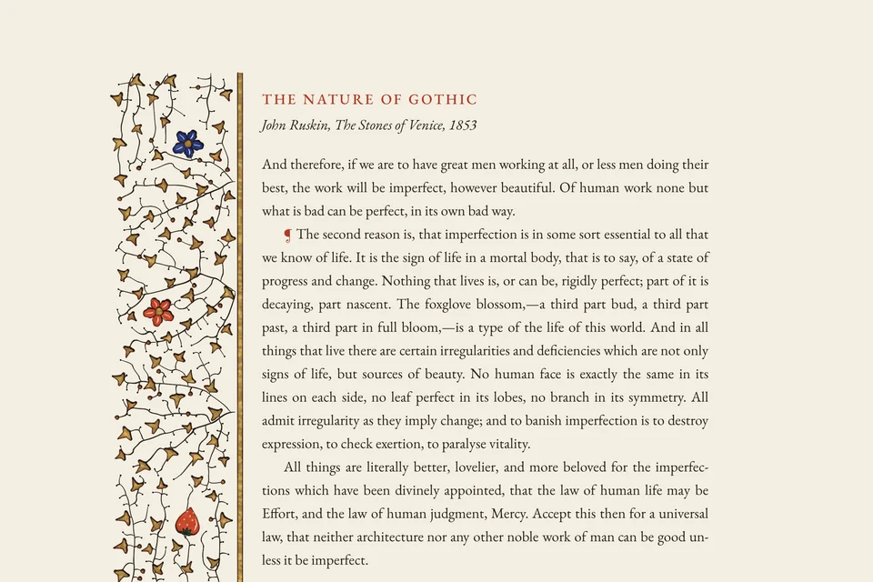
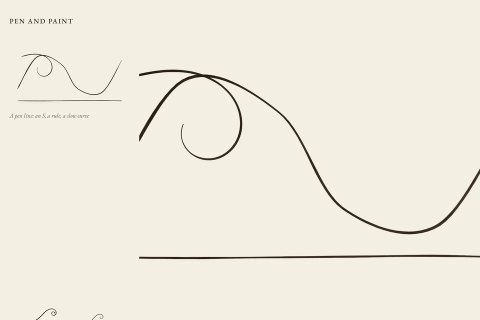

Experiments in illuminating the web page: ornament grown from the page it sits on, drawn with a pen that deposits ink and paint that pools, and held to one measure: would it belong in the permanent collection of a museum?

The bar border of a French Book of Hours, c. 1450–1500. Flowers and a wild strawberry are set first, gold ivy and pen dots evenly round them, and the stems grow from the bar and the ends of the margin until they have reached every one. On a phone the same rule grows a headpiece. It can grow in front of you: stems lengthen, leaves unfold.
Space colonization, worn gold on bole, a pen that pools.

A study of single marks, at size and at four times: the pen line, the branch that leaves its stem and curls, the leaf in each pigment, gold laid on red bole and worn through. Nothing larger can be better than these.
A study, not a composition.